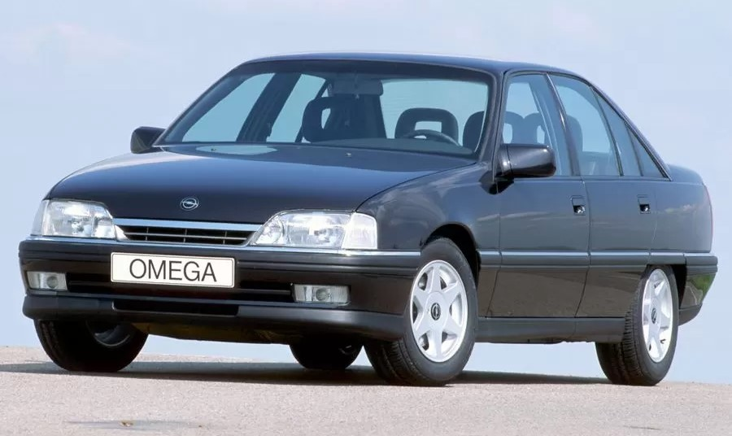
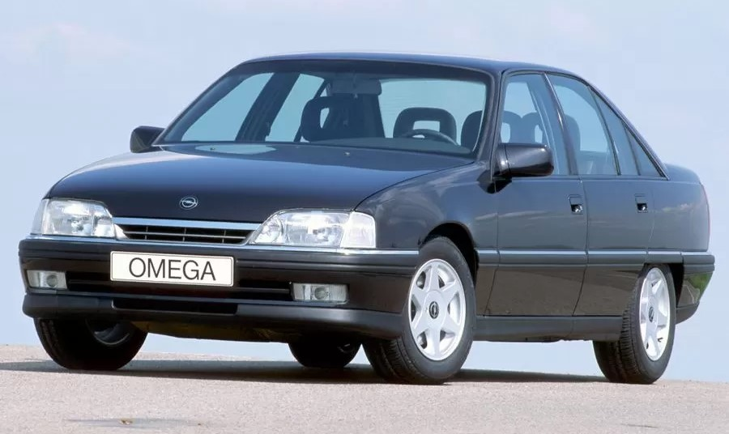
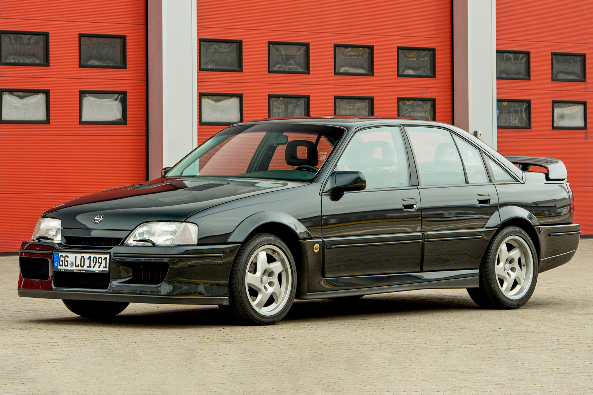

Протягом 80-х років минулого сторіччя Opel активно працював над оновленням власної модельної лінійки, Бренд неначе прагнув власного перезапуску. Наприклад, у 1982 році дебютувала модель Opel Corsa, що дозволила зайняти нові ніші в світі автомобілів. Та навіть у вже відомих сегментах були презентовані нові моделі, причому змінювались не лише покоління автомобілів — змінювались навіть їх назви! Так з’явився новий «центральній гравець», що прийшов на зміну Opel Ascona: у 1988 році дебютував автомобіль Opel Vectra A. Це була модель середнього класу, що могла використовуватись і як сімейний перевізник, і як службовий автомобіль.
Адже нова модель Opel Vectra A пропонувалася у вигляді зручного хетчбеку або класичного седану, з бензиновими або дизельними двигунами об’ємом 1,4-2,5 літри, могла бути оснащена «механікою» чи «автоматом». До речі, змінювались навіть назви автомобіля: перше покоління Opel Vectra також пропонувалося під Брендами Chevrolet та Vauxhall, а серед виробничих потужностей варто відмітити заводи по зборці навіть у Єгипті та Бразилії. Після оновлення 1992 року, модель Opel Vectra A знову відмітилась зростанням кількості доступних версій та двигунів — це був справді «глобальний автомобіль»: кожен покупець мав можливість обрати версію на власний смак та гаманець.
 

Дебют першого покоління Opel Omega (під індексом А) припав на 1986 рік. Модель прийшла на зміну Opel Rekord і Opel Commodore. Автомобіль випускався з кузовами седан і універсал, останній отримав до імені приставку Caravan. Opel Omega володіла широким вибором стандартного устаткування і відносилася до автомобілів бізнес-класу. Інтер'єр лаконічний і строгий. Досить просторий салон доповнюється великим багажником. Відмінна плавність ходу і керованість є основними складовими Omega.
Гамма силових агрегатів була представлена такими двигунами: бензинові рядні карбюраторні об'ємом 1,8 л; інжекторні об'ємом 1,8 i л; 2,0 i л; 2,4 i; 2,6 i; 3,0 i, а також дизельні атмосферні двигуни об'ємом 2,3 YD і такі ж турбовані (2,3 YDT і 2,3 DTR). Двигуни агрегатувалися з п'ятиступінчастою ручною коробкою передач або чотириступінчастим автоматом, що мають зимовий і спорт-режими. Всі гальма — дискові, з вакуумним підсилювачем. Привід на задні колеса. Omega першого покоління завоювала в 1987 році почесний титул «Автомобіль року».
У 1990 році Omega піддали модернізації. Замінили лінійку литих дисків, кермо, оббивку і форму крісел. Зовні було замінено передній і задній бампери, бічні молдинги дверей, радіаторну решітку, форму накладок на пороги, розширено гамму опцій комфорту. Встановлення кондиціонеру так і залишилося замовною опцією.
У 1993 році було прийнято рішення про зняття з виробництва Omega A.
З 1990 по 1992 роки продавався Lotus Omega — спортивний седан британського виробника автомобілів Lotus, заснований на основі Opel Omega і розроблений спеціалістами Лотоса та виготовлений у Великій Британії тиражем в кількості 988 екземплярів.
Opel Senator B, в Англії відомий як Vauxhall Senator, представляв собою версію Opel Omega зі зміненою задньою частиною кузова. В Австралії на його базі випускався автомобіль Holden Commodore VN.
Двигуни спочатку були ті ж, що і на першому поколінні в кінці випуску - 2,5 і 3,0 літри. З 1989 року з'явився більш сучасний 24-клапанний DOHC I6 об'ємом 3,0 літра - 204 к.с. У Великій Британії ця модифікація часто використовувалася поліцією. Згодом 2,5-літровий двигун був замінений на 12-клапанний об'ємом 2,6 літра. І 2,6, і 24-клапанний 3,0-літровий двигуни мали систему «Dual Ram», що збільшує крутний момент на невеликих оборотах.
З 1987 року була доступна комплектація CD, вона оснащувалася 3-літровим двигуном, мала в стандарті кондиціонер, бортовий комп'ютер, круїз-контроль і задню підвіску з автоматичним підтриманням кліренсу. Як опція пропонувався шкіряний салон.
Після 1993 року модель була знята з виробництва без прямої заміни в модельному ряду. Автомобілі цього класу Opel більше не виробляв і взагалі пішов з цього сегмента, залишивши старшою модель бізнес-класу Opel Omega B.